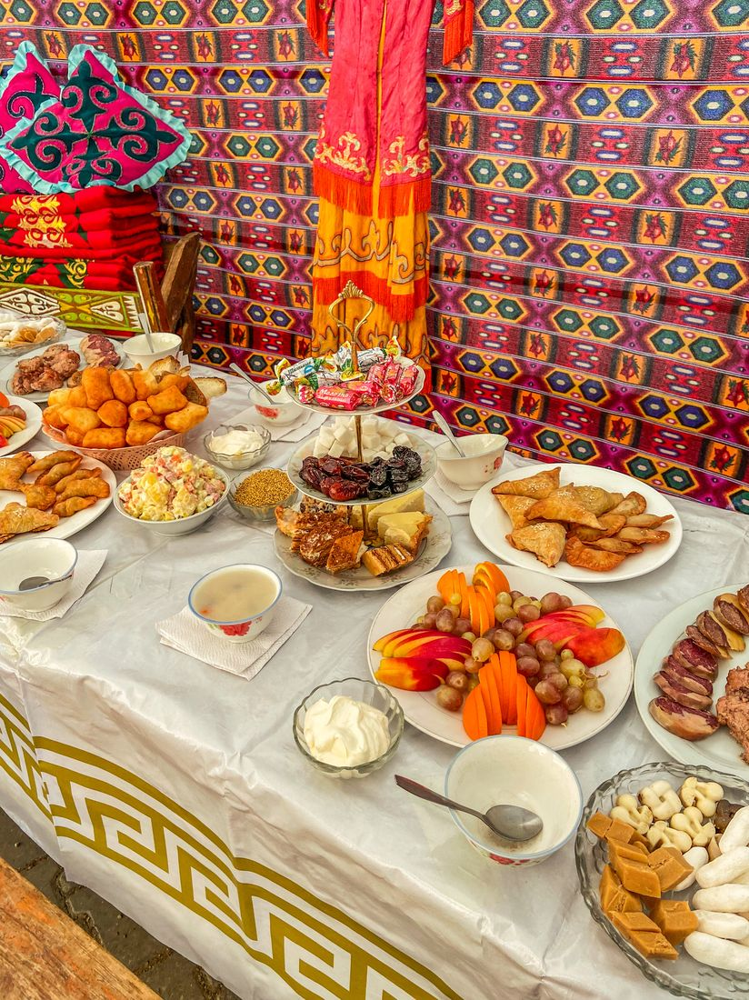
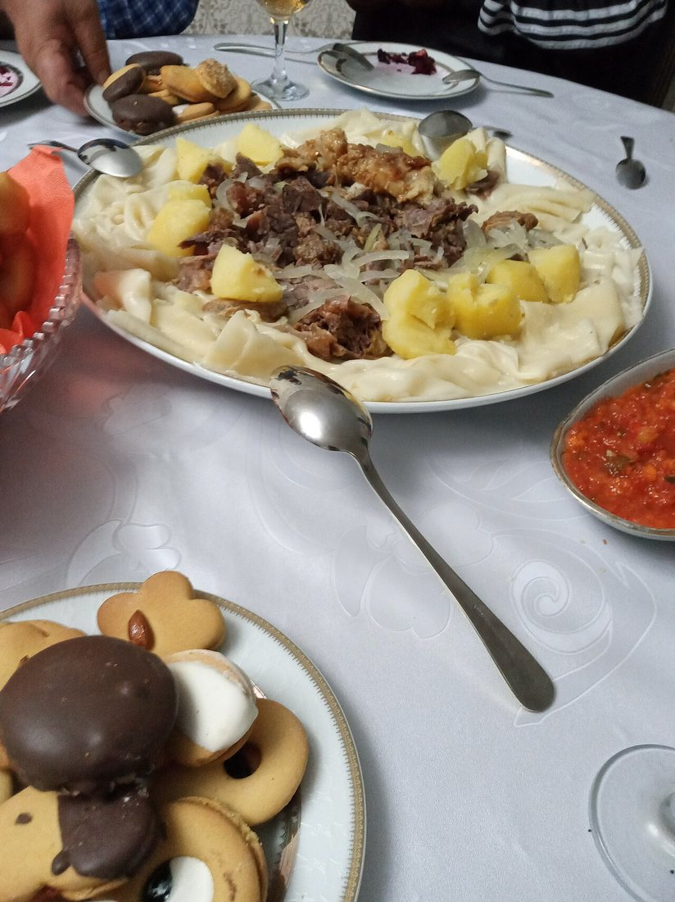
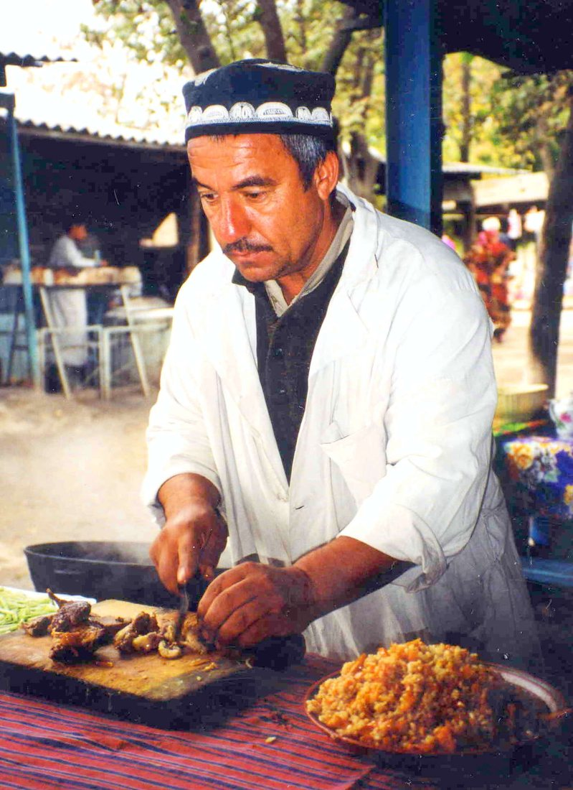
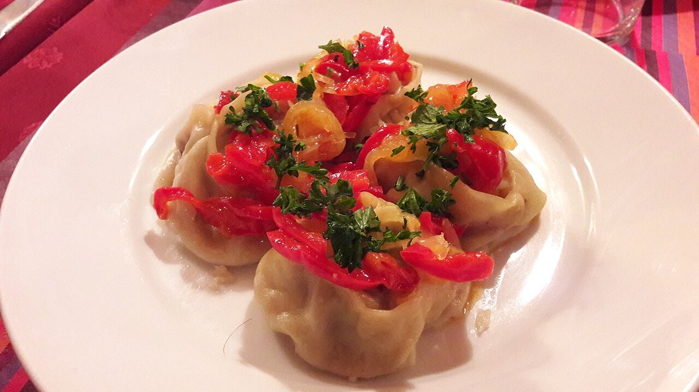
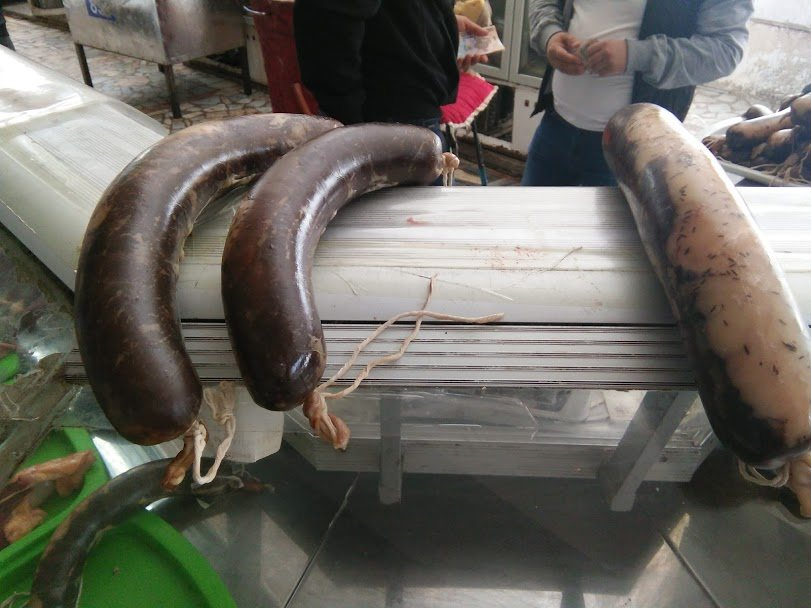
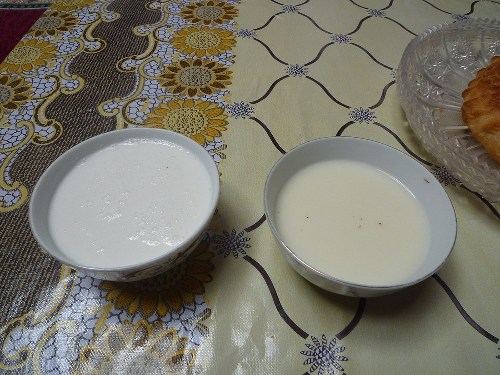
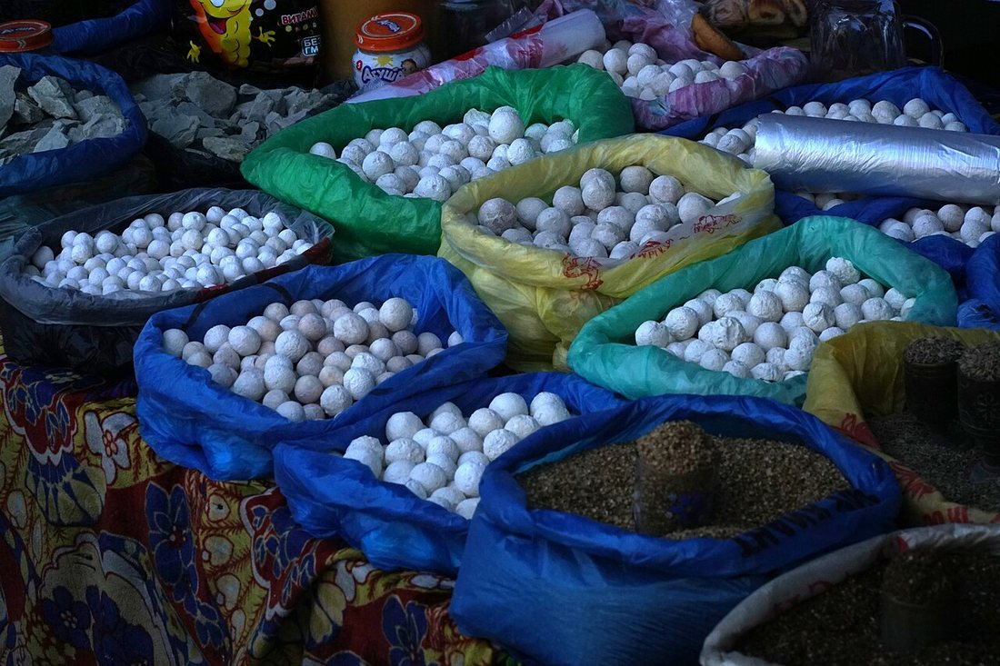
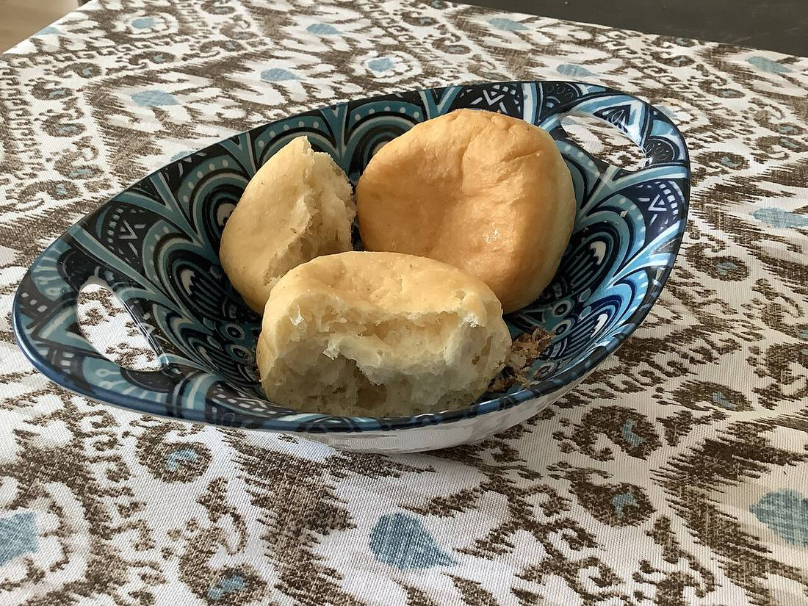
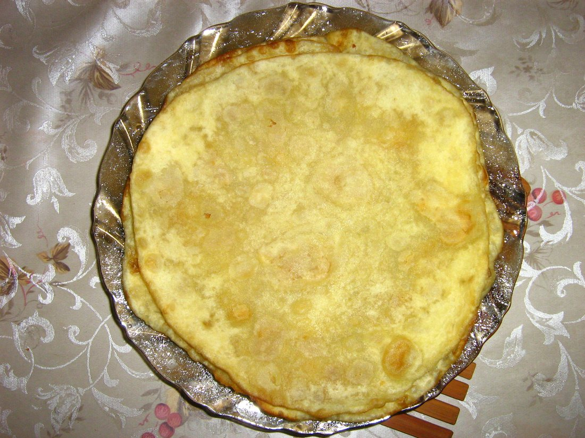

Көркем еңбек · Ұлттық дәстүр · Дастарқан Art & Craft · National Tradition · The Dastarkhan Художественный труд · Национальная традиция · Дастархан
🍽️ Қазақтың ұлттық тағамдары
🍽️ Kazakh National Dishes
🍽️ Казахские национальные блюда
Көшпелі халықтың дастарқаны: ет, сүт және нанның дәмі мен дәстүрі. The table of a nomadic people: the taste and tradition of meat, milk and bread. Стол кочевого народа: вкус и традиции мяса, молока и хлеба.
Қазақ асханасы — ғасырлар бойы көшпелі өмір салтында қалыптасқан. Негізгі азық — ет (жылқы, қой) және сүт тағамдары, оларға нан мен қамырдан жасалған тағамдар қосылады. Дала жағдайында тамақ ұзақ сақталуы әрі тойымды болуы керек болды, сондықтан етті кептіріп, тұздап, ал сүтті ашытып дайындады. Kazakh cuisine took shape over centuries of nomadic life. Its core is meat (horse, mutton) and dairy, joined by dishes made from bread and dough. On the steppe food had to keep for a long time and be filling, so meat was dried and salted, and milk was fermented. Казахская кухня сложилась за века кочевой жизни. Её основа — мясо (конина, баранина) и молочные продукты, к которым добавляются блюда из хлеба и теста. В степи пища должна была долго храниться и быть сытной, поэтому мясо сушили и солили, а молоко сквашивали.
Қонақжайлылық — қазақтың басты дәстүрі. Дастарқанға келген әрбір қонақ ең жақсы тағамдармен сыйланады. 🔍 Суреттерді басып үлкейтіңіз. Hospitality is a central Kazakh tradition. Every guest at the table is honoured with the finest dishes. 🔍 Tap any photo to enlarge it. Гостеприимство — главная казахская традиция. Каждого гостя за дастарханом потчуют лучшими блюдами. 🔍 Нажмите на любое фото, чтобы увеличить.

🥘 Ыстық негізгі тағамдар 🥘 Hot Main Dishes 🥘 Горячие основные блюда
Бұл тағамдар тойдың, мерекенің және үлкен қонақасының басты тағамы. Олар көбіне үлкен табаққа салынып, бүкіл отбасына ортақ ұсынылады. These are the centrepiece of a feast, a celebration and a large welcome meal. They are usually served on one big platter, shared by the whole family. Это главные блюда тоя, праздника и большого званого обеда. Обычно их подают на одном большом блюде — общем для всей семьи.

Қазақтың ең басты тағамы: қайнатылған ет (жылқы не қой) жайма қамырдың (қамыр) үстіне туралып, сорпамен беріледі. «Бес бармақ» — қолмен жейтін болғандықтан осылай аталған.The foremost Kazakh dish: boiled meat (horse or mutton) sliced over flat sheets of dough and served with broth. The name means "five fingers" — it is eaten by hand.Самое главное блюдо казахов: отварное мясо (конина или баранина), нарезанное на широкие пласты теста и поданное с бульоном (сорпа). «Бес бармақ» — «пять пальцев», его едят руками.

Күріш, ет, сәбіз бен пияздан қазанда пісірілетін тойымды тағам. Барлық Орталық Азияға ортақ, қазақ дастарқанының да сүйікті асы. Қазанда баппен бұқтырылып дайындалады.A hearty dish of rice, meat, carrot and onion cooked in a cauldron (kazan). Shared across all of Central Asia, it is also a favourite of the Kazakh table, slowly stewed in the kazan.Сытное блюдо из риса, мяса, моркови и лука, приготовленное в казане. Общее для всей Центральной Азии, любимо и на казахском столе; томится в казане на медленном огне.

Жұқа қамырға ет пен пияз (кейде асқабақ) салынып оралған, буда (мантыварка) пісірілетін ірі тұшпара. Майлы әрі шырынды; қаймақпен немесе тұздықпен жейді.Large dumplings of thin dough filled with meat and onion (sometimes pumpkin), cooked over steam. Juicy and rich; eaten with sour cream or a sauce.Крупные «пельмени» из тонкого теста с начинкой из мяса и лука (иногда тыквы), приготовленные на пару. Сочные и наваристые; едят со сметаной или соусом.
🐎 Ет пен сүт дәмханасы 🐎 Meat & Milk of the Nomad 🐎 Мясо и молоко кочевника
Жылқы еті мен бие сүті — қазақ асының өзегі. Бұл тағамдар ұзақ сақталады әрі денеге күш береді — далада өмір сүрудің кілті осында. Horse meat and mare's milk are the core of Kazakh food. These products keep for a long time and give the body strength — the key to life on the steppe. Конина и кобылье молоко — основа казахской еды. Эти продукты долго хранятся и дают телу силу — в этом ключ к жизни в степи.

Жылқының қабырға етінен жасалатын дәмді шұжық — мерекелік дастарқанның сәні. Тұздалып, кептіріліп немесе қайнатылып дайындалады, жұқалап туралып ұсынылады.A prized sausage made from horse rib meat — the pride of a festive table. It is salted, dried or boiled and served in thin slices.Деликатесная колбаса из рёберного конского мяса — украшение праздничного стола. Её солят, вялят или варят и подают тонкими ломтиками.

Бие сүтінен ашытылып жасалатын сергітетін, аздап қышқыл сусын. Дәрумендерге бай, денсаулыққа пайдалы саналады. Жазда — қонақтың алдына қойылатын ең қадірлі сусын.A refreshing, slightly sour drink fermented from mare's milk. Rich in vitamins and considered healthful. In summer it is the most honoured drink set before a guest.Освежающий, слегка кислый напиток, сквашенный из кобыльего молока. Богат витаминами и считается полезным. Летом — самый почётный напиток, который подают гостю.

Сүзбеден (айраннан) тұздап жасалып, күнге кептірілген қатты домалақ сүт өнімі. Ұзақ сақталады, жолға таптырмас азық. Тұзды әрі қышқыл дәмі бар.Hard balls of salted curd (from strained sour milk) dried in the sun. It keeps for a very long time — the perfect food for a journey. Salty and sour in taste.Твёрдые шарики из солёного сцеженного творога (из айрана), высушенные на солнце. Хранится очень долго — незаменимая еда в дороге. Вкус солёно-кислый.
🥖 Нан мен қамыр тағамдары 🥖 Bread & Pastry 🥖 Хлеб и изделия из теста
Қамырдан жасалған тағамсыз бірде-бір дастарқан толық болмайды. Олар майда қуырылып, шай мен қымызға қосып ұсынылады. No table is complete without something made from dough. These are fried in oil and served alongside tea and kumys. Ни один дастархан не обходится без изделий из теста. Их жарят в масле и подают к чаю и кумысу.

Ашытқан қамырдан кесіп, майда қуырылатын алтын түсті домалақ нан. Дастарқанның символы — той, мейрам, қонақ келгенде міндетті түрде пісіріледі. Шаймен де, қымызбен де жейді.Golden puffs of leavened dough cut into pieces and deep-fried. A symbol of the table — always made for a toi, a holiday or a guest. Eaten with both tea and kumys.Золотистые кусочки дрожжевого теста, обжаренные в масле. Символ дастархана — их обязательно готовят на той, праздник и к приходу гостей. Едят и с чаем, и с кумысом.

Майда қуырылатын жұқа, дөңгелек нан. Әсіресе еске алу, ас беру дәстүрінде маңызды — «жеті шелпек» пісіріліп, аруақтарға бағышталады. Жұмсақ әрі майлы.A thin, round flatbread fried in oil. It is especially important in remembrance customs — "seven shelpek" are baked and dedicated to ancestors. Soft and rich.Тонкая круглая лепёшка, обжаренная в масле. Особенно важна в поминальной традиции — пекут «семь шелпеков» в память о предках. Мягкая и сдобная.
Тағам топтарын салыстыру Comparing the Food Groups Сравнение групп блюд
| Группа | Основа | Примеры | Особенность |
|---|---|---|---|
| Мясные | конина, баранина | бешбармак, казы, куырдак | сытность, долгое хранение (вяление, соление) |
| Молочные | кобылье и коровье молоко | кумыс, курт, ирімшік, айран | сквашивание; польза и витамины |
| Из теста | мука, дрожжи | баурсак, шелпек, манты | жарят или готовят на пару; к чаю и кумысу |
| Топ | Негізі | Мысалдар | Ерекшелігі |
|---|---|---|---|
| Ет тағамдары | жылқы, қой еті | бесбармақ, қазы, қуырдақ | тойымды, ұзақ сақталады (кептіру, тұздау) |
| Сүт тағамдары | бие, сиыр сүті | қымыз, құрт, ірімшік, айран | ашыту; пайдалы әрі дәрумендерге бай |
| Қамыр тағамдары | ұн, ашытқы | бауырсақ, шелпек, манты | қуырады не буда пісіреді; шай мен қымызға |
| Group | Base | Examples | Key feature |
|---|---|---|---|
| Meat | horse, mutton | beshbarmak, qazy, kuyrdak | filling; keeps long (drying, salting) |
| Dairy | mare's & cow's milk | kumys, kurt, irimshik, ayran | fermentation; healthful, rich in vitamins |
| Dough | flour, yeast | baursak, shelpek, manti | fried or steamed; with tea and kumys |
Дастарқан дәстүрлері Traditions of the Table Традиции дастархана
🤝 ҚонақжайлылықHospitalityГостеприимство
Қонақты ең дәмді тағаммен сыйлау — қасиетті парыз.Honouring a guest with the best food is a sacred duty.Угостить гостя лучшим — священный долг.
🐏 Бас тартуThe sheep's headПодача головы
Қойдың пісірілген басы ең сыйлы қонаққа ұсынылады.The boiled sheep's head is offered to the most honoured guest.Варёную баранью голову подают самому почётному гостю.
☕ Шай мәдениетіTea cultureЧайная культура
Сүт қосылған шай — әр дастарқанның бастауы.Tea with milk begins every gathering at the table.Чай с молоком открывает каждый дастархан.
🙏 Бата беруThe blessingБата (благословение)
Ас соңында ақсақал бата беріп, тілек айтады.After the meal an elder gives a blessing and good wishes.После еды старший даёт бату — благословение.
💬 Қорытынды 💬 In a nutshell 💬 Главное
Қазақтың ұлттық тағамдары — тек тамақ емес, көшпелі халықтың тарихы мен дүниетанымы. Ет, сүт және нан тағамдары далада өмір сүрудің даналығын көрсетеді, ал дастарқан дәстүрлері халықтың қонақжайлылығы мен бірлігін сақтайды. Осы дәмді мұраны білу — өз халқыңды құрметтеу. Kazakh national dishes are not just food — they are the history and worldview of a nomadic people. The dishes of meat, milk and bread reflect the wisdom of life on the steppe, while the traditions of the table preserve a people's hospitality and unity. To know this delicious heritage is to honour one's own people. Казахские национальные блюда — это не просто еда, а история и мировоззрение кочевого народа. Блюда из мяса, молока и теста отражают мудрость жизни в степи, а традиции дастархана хранят гостеприимство и единство народа. Знать это вкусное наследие — значит уважать свой народ.